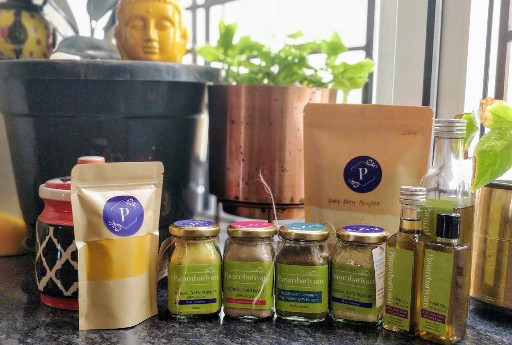
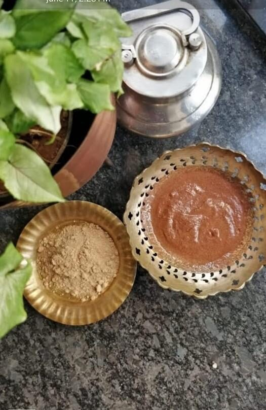

A kitchen shelf, rediscovered.
Parambariyam started the way most good things in a Tamil home do: with a grandmother's recipe, a sunny terrace and a family that refused to settle for chemicals.


The old ways were the clean ways.
Nalangu maavu instead of soap. Seeyakkai instead of shampoo. A pinch of vendhayam, omam and karunjeeragam after a heavy meal. Rasam simmered in an eeyachombu. None of this is new. We simply forgot it.
Every Parambariyam product is made from whole ingredients that are hand-picked, sun-dried and ground in our home kitchen, in batches small enough that we can check every one. No preservatives, no fragrance, no fillers.
Our vessels follow the same rule. The brass filters are proper brass. The eeyachombu are hand-hammered by artisans in Kumbakonam, whose families have done this for generations.
Back to our roots is not a slogan. It's the recipe.
What you'll never find in a Parambariyam pack
Chemicals
No SLS, parabens, synthetic fragrance or colour.
Fillers
No starch, talc or cheap bulking agents.
Shortcuts
No oven-drying, no factory grinding.
Old stock
Made in small batches and packed fresh.
Every ingredient, by name
We list everything that goes into each product. Here's what each one is and why it's there.
Try the ritual.
Start with Nalangu Maavu and Shika Podi, our two most reordered products.